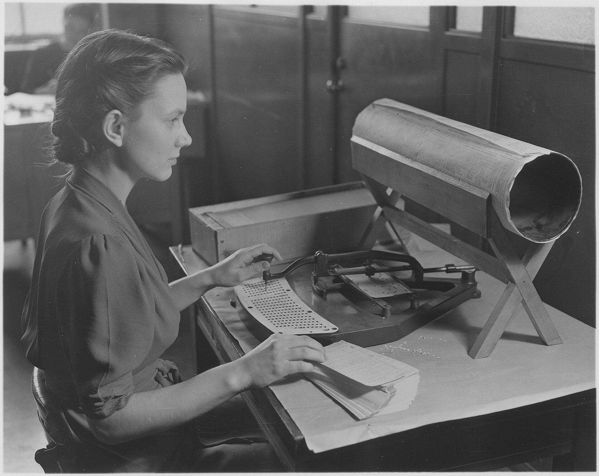

CLAIMModern administration is built on fixed official jurisdictions. Each office has its own duties, its own limited authority, and a place in a ranked chain.
REASONINGWeber lays out the pieces in order. The regular work of the organization is divided into permanent official duties. The right to command is assigned on a fixed footing and bounded by rules, including rules about what force an official may use. Only people with the required qualifications are employed. Offices stand in a hierarchy of higher and lower, so a person affected by a decision can appeal to the next level up. Business is conducted through written records kept in the files, and the office is separated from the official’s private household. Behind all of it stand general rules that can be learned, and mastering them is a specialized skill. Public administration, he adds, does not decide each matter by individual command. It regulates in the abstract, by rule. In a government this is bureaucratic authority; in a private firm it is bureaucratic management.
EXAMPLEA licensing office that grants a permit by checking an applicant against a published list of requirements is a bureaucracy in this sense. A court official who grants permits to friends and refuses rivals is not. Weber calls that older pattern patrimonial administration: favors and privileges handed out by a ruler or his household.

CLAIMThe decisive reason bureaucratic organization advances is technical superiority over every alternative.
REASONINGWeber does not say bureaucracy is the kindest or the fairest form. He says it is the most effective. He compares it to a machine set beside non-mechanical production: the gap is one of kind, not degree. Trained, salaried officials working under rules beat part-time, unpaid, or amateur administration on accuracy, speed, clarity, continuity, and cost, and for complicated tasks even the cost advantage holds. That is why rivals cannot simply outcompete it with something friendlier.
EXAMPLEA town run by notables who serve in their spare time can manage a small harbor. A state that must register, tax, and supply millions of people cannot.
CLAIMThe superiority comes from specialization and from impersonality.
REASONINGWork is handed to officials trained for it, and constant practice makes them better. Business follows calculable rules and ignores who the parties are. Weber notes that the market shares this temper: money does not ask who is paying. Bureaucracy therefore tends to level distinctions of rank and honor in how people are treated. Modern capitalism needs results that can be calculated in advance, so it welcomes this. Weber also draws the unsettling corollary. The more completely an administration strips out affection, hostility, and any feeling that cannot be calculated, the better it works, and he records that as its recognized virtue.
EXAMPLETwo applicants with identical files receive the same answer, whoever their relatives are. The person who benefits from that and the person whose special circumstances the rule cannot see are watching the same feature.
CLAIMThe same impersonality that makes the apparatus work shapes the person who staffs it.
REASONINGThe professional official, unlike the honorary notable, depends on the post for his livelihood and for his sense of vocation alike. He cannot step out of the apparatus. Most of the time he is a small part of a large mechanism that sets his route in advance. The machine comparison from step 2 now describes a person rather than an organization.
EXAMPLEA clerk who might wish to bend a rule for a hard case holds an office whose duties, limits, and career all depend on not doing so.
CLAIMA fully established bureaucracy is among the hardest social structures to destroy, and it serves whoever controls it.
REASONINGIt converts loosely coordinated common action into action ordered rationally by rules, and organized action of that kind beats unorganized resistance. Because the apparatus is impersonal, it can be made to work for anyone who gains control of it. Weber cites Bismarck, whose ministers went on running their offices after his retirement as if one figure had been replaced by another, and he says an occupying enemy needs only to change the top officials. Revolution in the sense of building wholly new authority becomes technically harder. His last point concerns democracy: it resists government by officials, yet it unintentionally promotes bureaucratization, because it needs administrators to carry out what voters decide.
EXAMPLEElections change the ministers. The offices, the files, and the rules continue.
| Distinction | What separates the two sides |
|---|---|
| Bureaucratic authority vs bureaucratic management | The same three elements, in public government or in private economic enterprise. |
| Bureaucracy vs patrimonial administration | Abstract rules and trained staff, against favor, privilege, and personal loyalty to a ruler. |
| Rational vs good | Rational describes the fit between means and ends. It does not say the ends are worth pursuing. |
| Ideal type vs description | A deliberately pure model used to measure real organizations, not a portrait of any one of them. |
The central premise, technical superiority, is asserted more than demonstrated. The sociologist Robert K. Merton, in a 1940 essay on bureaucratic structure and personality, argued that the rule-following discipline Weber praises can produce what Merton, borrowing Thorstein Veblen’s phrase, called trained incapacity: officials so schooled in procedure that they apply it where it defeats the purpose it was written for, and come to treat the rules as ends in themselves. If that is common, the same features that give precision also give rigidity, and the ranking of bureaucracy above every alternative depends on the task and the setting.
Weber can answer in part. He builds a pure type to measure real cases against, so a clerk bound to the rule at the wrong moment is a departure that the type helps to describe. The objection still lands on the claim that bureaucracy always wins. Whether it wins depends on what is counted: speed and consistency on standard cases, or fit to the unusual one.
- Weber treats bureaucracy as rational-legal authority at work. How does the administrative apparatus itself express the principles of rational-legal legitimacy?
- Which advantages does Weber identify, and why does he judge bureaucracy technically superior to every other form of administration?
- Weber judges bureaucracy, from a purely technical standpoint, the most rational known way of exercising authority over people. Does that make it good? What is the word rational doing in that claim, and what is it not doing?
- Weber argues that a fully established bureaucracy is among the structures hardest to destroy. Why is that true, and what does it imply for democratic attempts to reform or dismantle bureaucratic institutions?